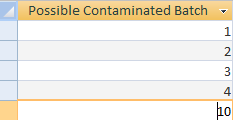
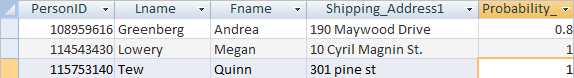
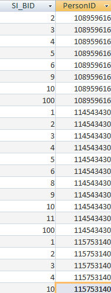

About the juice |
Three types of cleanses |
| 15 different juices | 1. “Can You Kick It” for beginners |
| Raw + Organic | 2. “Stuck in the Middle” for intermediate customers |
| Cold pressed | 3. “Forever Young” for advanced customers |
Juice cleanse options
|
select c.[Number of Possible Contaminated], *
from person AS p, [Query_4_#_Contam] AS c
where p.PersonID in (
select o.cid
from [order] o
where o.oid in (
select s.oid
from shipment s
where s.sid in (
select z.sid
from ship_Is_filled_By z
inner join (
select R.Instance, R.PID, R.pDate
from Product_Record_Sellable R
where R.Mixed_BID1 in (
select B.mixed_BID
from mbatch_contains_sibatch B
where B.SI_BID in (
select distinct BB.SI_BID
from mbatch_contains_sibatch bb
where BB.Mixed_BID in (
select distinct RR.mixed_BID1
from Product_Record_Sellable RR
where RR.PID in (
select zz.PID from ship_is_filled_by zz where zz.SID in (
select ss.sid from shipment ss where ss.oid in (
select oo.oid from [order] oo where oo.cid = 115753140 AND oo.Date_Placed = #1/2/2013#))
)
AND RR.pDate in (
select zz.pDate from ship_is_filled_by zz where zz.SID in (
select ss.sid from shipment ss where ss.oid in (
select oo.oid from [order] oo where oo.cid = 115753140 AND oo.Date_Placed = #1/2/2013#))
)
AND RR.Instance in (
select zz.Instance from ship_is_filled_by zz where zz.SID in (
select ss.sid from shipment ss where ss.oid in (
select oo.oid from [order] oo where oo.cid = 115753140 AND oo.Date_Placed = #1/2/2013#))
)
)
OR BB.Mixed_BID in (
select distinct RR.mixed_BID2
from Product_Record_Sellable RR
where RR.PID in (
select zz.PID from ship_is_filled_by zz where zz.SID in (
select ss.sid from shipment ss where ss.oid in (
select oo.oid from [order] oo where oo.cid = 115753140 AND oo.Date_Placed = #1/2/2013#))
)
AND RR.pDate in (
select zz.pDate from ship_is_filled_by zz where zz.SID in (
select ss.sid from shipment ss where ss.oid in (
select oo.oid from [order] oo where oo.cid = 115753140 AND oo.Date_Placed = #1/2/2013#))
)
AND RR.Instance in (
select zz.Instance from ship_is_filled_by zz where zz.SID in (
select ss.sid from shipment ss where ss.oid in (
select oo.oid from [order] oo where oo.cid = 115753140 AND oo.Date_Placed = #1/2/2013#))
)
)
)
)
OR R.Mixed_BID2 in (
select B.mixed_BID
from mbatch_contains_sibatch B
where B.SI_BID in (
select distinct BB.SI_BID
from mbatch_contains_sibatch bb
where BB.Mixed_BID in (
select distinct RR.mixed_BID1
from Product_Record_Sellable RR
where RR.PID in (
select zz.PID from ship_is_filled_by zz where zz.SID in (
select ss.sid from shipment ss where ss.oid in (
select oo.oid from [order] oo where oo.cid = 115753140 AND oo.Date_Placed = #1/2/2013#))
)
AND RR.pDate in (
select zz.pDate from ship_is_filled_by zz where zz.SID in (
select ss.sid from shipment ss where ss.oid in (
select oo.oid from [order] oo where oo.cid = 115753140 AND oo.Date_Placed = #1/2/2013#))
)
AND RR.Instance in (
select zz.Instance from ship_is_filled_by zz where zz.SID in (
select ss.sid from shipment ss where ss.oid in (
select oo.oid from [order] oo where oo.cid = 115753140 AND oo.Date_Placed = #1/2/2013#))
)
)
OR BB.Mixed_BID in (
select distinct RR.mixed_BID2
from Product_Record_Sellable RR
where RR.PID in (
select zz.PID from ship_is_filled_by zz where zz.SID in (
select ss.sid from shipment ss where ss.oid in (
select oo.oid from [order] oo where oo.cid = 115753140 AND oo.Date_Placed = #1/2/2013#))
)
AND RR.pDate in (
select zz.pDate from ship_is_filled_by zz where zz.SID in (
select ss.sid from shipment ss where ss.oid in (
select oo.oid from [order] oo where oo.cid = 115753140 AND oo.Date_Placed = #1/2/2013#))
)
AND RR.Instance in (
select zz.Instance from ship_is_filled_by zz where zz.SID in (
select ss.sid from shipment ss where ss.oid in (
select oo.oid from [order] oo where oo.cid = 115753140 AND oo.Date_Placed = #1/2/2013#))
)
)
)
)
) as a on a.Instance = z.Instance and a.PID = z.PID and a.pDate = z.pDate
)
)
);
select A.PERSONID, A.LNAME, A.FNAME, A.SHIPPING_ADDRESS1,
(A.NUM/A.[NUMBER OF POSSIBLE CONTAMINATED])
as PROBABILITY_CONTAMINATED
from (
select count(P.SI_BID) as NUM, P.PERSONID,
N.[NUMBER OF POSSIBLE CONTAMINATED], PP.LNAME, PP.FNAME,
PP.SHIPPING_ADDRESS1
from CONTAM_BATCH as C, POSSIBLE_CONTAM_BATCH as P,
[QUERY_4_#_CONTAM] as N, PERSON as PP
where C.SI_BID=P.SI_BID and PP.PERSONID=P.PERSONID
group by P.PERSONID, N.[NUMBER OF POSSIBLE CONTAMINATED],
PP.LNAME, PP.FNAME, PP.SHIPPING_ADDRESS1
) as A;
|   |
 |
select SIB.SI_BID as SI_BID, ((SIB.Original_Weight*PRN.Cost) +
E.Hourly_Wage*(EM.Time_Ended - EM.Time_Started)/60) as Cost
from EMPLOYEE as E, PRODUCT_RECORD_NONSELLABLE as PRN,
SINGLE_INGREDIENT_BATCH as SIB, EMPLOYEE_MAKES_SIBATCH_WITH_EQUIP as EM
where PRN.PID = SIB.Ingredient_PID and
EM.BID = SIB.SI_BID and
EM.EID = E.EID;
select MB.Mixed_BID as Mix_BID,
sum((BCB.Liquid_Volume/SIB.Produced_Volume)*CSB.Cost) as Cost
from MIXED_BATCH AS MB, MBATCH_CONTAINS_SIBATCH as BCB,
costSingleBatch as CSB, SINGLE_INGREDIENT_BATCH as SIB
where MB.Mixed_BID = BCB.Mixed_BID
and BCB.SI_BID = CSB.SI_BID
group by MB.Mixed_BID;
select PRS.Pdate, PRS.PID,
(PRS.Price-((B.Size/MBB.Final_Volume)*(MBC.Cost))) as Profit
from PRODUCT_RECORD_SELLABLE as PRS, BOTTLE as B, MIXED_BATCH as MBB,
costMixBatch as MBC, Prod_Includes_Prod as PIP
where PRS.PID = PIP.Product and
B.PID = PIP.Sub_Product and
PRS.Mixed_BID1 = MBB.Mixed_BID and
MBB.Mixed_BID = MBC.Mix_BID;
select PP.PDate, PP.PID, sum(PP.Profit)
from ProductProfit as PP
group by PP.PID, PP.Pdate;
select j.pid, sum(IIf(pc1.contactID = c.cid and
pc1.sampling_event = e1.eventID,1,0))
as New_Customers, e1.eventID
from potential_customer as pc1, sampling_event as e1, customer as c, juices_at_event as j
where (((pc1.sampling_event)=e1.eventID) and ((pc1.contactID) = c.cid)
and ((e1.eventID)=j.eventID))
group by j.pid, e1.eventID;
select j.pid, Q3.New_Customers, Count(pc2.contactID) as Event_Attendees,
[Q3.New_Customers]/[Event_Attendees] as customer_yield, e1.eventID,
e1.type, e1.event_description
from potential_customer as pc2, sampling_event as e1, juices_at_event as j, query3 as Q3
where pc2.sampling_event = e1.eventID and e1.eventID=j.eventID
group by j.pid, e1.eventID, e1.type, Q3.New_Customers, e1.event_description;
select sum(iif(CD.Juice1 = 1003, CD.Quantity, 0))/sum(CD.Quantity) as DRG, sum(iif(CD.Juice1 = 1004, CD.Quantity, 0)) / sum(CD.Quantity) as DRGPlus, 4 sum(iif(CD.Juice1 = 1005, CD.Quantity, 0)) / sum(CD.Quantity) as EZG, sum(iif(CD.Juice1 = 1006, CD.Quantity, 0)) / sum(CD.Quantity) as EZGPlus, sum(CD.Quantity) as n from Cleanse_Details as CD where exists (select * from [Order] O where O.OID = CD.OID and Date_Placed between #04/15/2013# and #04/21/2013#);
select (0.5*w3.drg*w3.n + 0.25*w2.drg*w2.n + 0.125*w1.drg*w1.n)/
(0.5*w3.n + 0.25*w2.n + 0.125*w1.n) as drg,
(0.5*w3.drgplus*w3.n + 0.25*w2.drgplus*w2.n + 0.125*w1.drgplus*w1.n)/
(0.5*w3.n + 0.25*w2.n + 0.125*w1.n) as drgplus,
(0.5*w3.ezg*w3.n + 0.25*w2.ezg*w2.n + 0.125*w1.ezg*w1.n)/
(0.5*w3.n + 0.25*w2.n + 0.125*w1.n) as ezg,
(0.5*w3.ezgplus*w3.n + 0.25*w2.ezgplus*w2.n + 0.125*w1.ezgplus*w1.n)/
(0.5*w3.n + 0.25*w2.n + 0.125*w1.n) as ezgplus,
(0.5*w3.n + 0.25*w2.n + 0.125*w1.n) as n
from week1trend as w1, week2trend as w2, week3trend as w3;
select s.BagID, s.BladeID,
avg(s.Produced_Volume/s.Original_Weight) as [Yield(Mean)],
stdev(s.Produced_Volume/s.Original_Weight) as [Standard Dev],
count(s.si_bid) as n
from single_ingredient_batch as s
where (s.ingredient_PID=3001) And s.Date_Made Between #1/1/2012# and #12/30/2012#
group by s.BagID, s.BladeID
order by Avg(s.Produced_Volume/s.Original_Weight) desc;
/